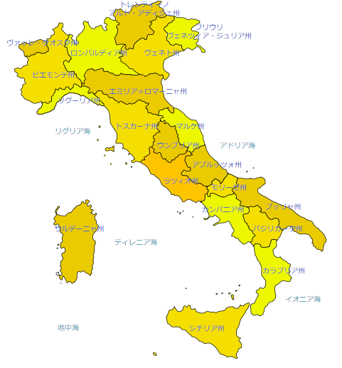
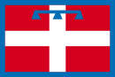
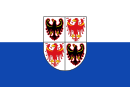
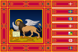
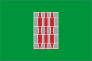
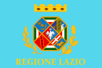
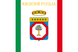
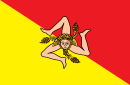

3. 地理
行政区分
州（レジョーネ、Regione）はイタリアの第一級行政区画で、イタリア全土に20個ある。「地方」と訳されることもあるが、公選の首長 (presidente)・評議会 (giunta)・議会 (consiglio regionale) を持つ広域自治体である。
州には特別自治州(regione autonoma a statuto speciale) と通常州 (regione a statuto ordinario) がある。
特別自治州は5つある。イタリア共和国憲法116条において特別な地位を持つと規定された州である。シチリア、サルデーニャ、トレンティーノ=アルト・アディジェ、ヴァッレ・ダオスタが1948年に、フリウリ＝ヴェネツィア・ジュリア州は1963年に成立した。特別自治州は一定の分野における独占的な立法権が認められる、それぞれの地域で徴税される国税のうち付加価値税を除いた税収配分を受けるなど（通常州よりも）大きな地方自治権を有する。通常州の制度は特別自治州よりも遅く、1972年に制定された。
州地図
| No. | 州旗 | *1 | 州名 | 州都 | 面積 | 人口(2014年) | 人口密度 |
|---|---|---|---|---|---|---|---|
| 1 |  | ピエモンテ州 | トリノ | 25,399 km² | 4,436,798 人 | 174.7 人/km² | |
| 2 | 特 | ヴァッレ・ダオスタ州 | アオスタ | 3,263 km² | 126,620 人 | 38.8 人/km² | |
| 3 | リグーリア州 | ジェノヴァ | 3,263 km² | 1,616,788 人 | 298.3 人/km² | ||
| 4 |  |
ロンバルディア州 | ミラノ | 23,862 km² | 9,917,714 人 | 415.6 人/km² | |
| 5 |  | 特 | トレンティーノ＝アルト・アディジェ州 | トレント | 13,619 km² | 1,037,114 人 | 70.7 人/km² |
| 6 |  | ヴェネト州 | ヴェネツィア | 18,264 km² | 4,853,657 人 | 265.7 人/km² | |
| 7 | 特 | フリウリ＝ヴェネツィア・ジュリア州 | トリエステ | 7,856 km² | 1,217,780 人 | 155.0 人/km² | |
| 8 | エミリア＝ロマーニャ州 | ボローニャ | 7,856 km² | 1,217,780 人 | 155.0 人/km² | ||
| 9 | トスカーナ州 | フィレンツェ | 22,990 km² | 3,749,813 人 | 163.1 人/km² | ||
| 10 |  | ウンブリア州 | ペルージャ | 8,456 km² | 906,486 人 | 96 人/km² | |
| 11 | マルケ州 | アンコーナ | 9,694 km² | 1,565,335 人 | 161.5 人/km² | ||
| 12 |  | ラツィオ州 | ローマ | 17,207 km² | 5,728,688 人 | 332.9 人/km² | |
| 13 | アブルッツォ州 | ラクイラ | 10,794 km² | 1,342,366 人 | 124.4 人/km² | ||
| 14 | モリーゼ州 | カンポバッソ | 4,438 km² | 319,780 人 | 72.1 人/km² | ||
| 15 | カンパニア州 | ナポリ | 13,595 km² | 5,834,056 人 | 429.1 人/km² | ||
| 16 |  | プッリャ州 | バーリ | 19,358 km² | 4,050,072 人 | 209.2 人/km² | |
| 17 | バジリカータ州 | ポテンツァ | 9,994 km² | 597,768 人 | 59.8 人/km² | ||
| 18 | カラブリア州 | ポテンツァ | 9,994 km² | 597,768 人 | 59.8 人/km² | ||
| 19 |  | 特 | シチリア州 | パレルモ | 25,702 km² | 4,974,154 人 | 194.5 人/km² |
| 20 | 特 | サルデーニャ州 | カリャリ | 24,089 km² | 1,675,411 人 | 69.5 人/km² |
*1:特別自治州